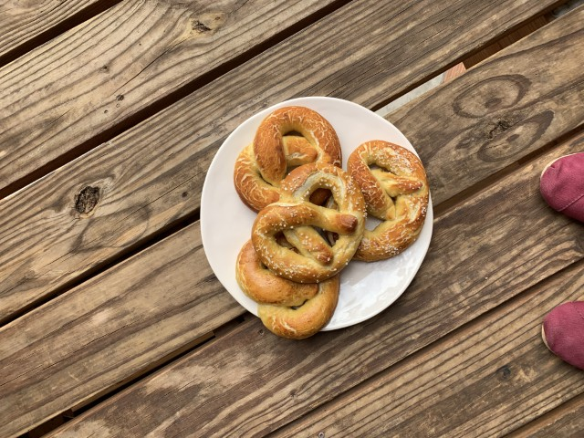

Homemade Pretzels
I use Gaby Dalkin’s recipe with a few adjustments. They are super easy
to make if you have a stand mixer with a dough hook, but it’s not
needed. Expect 1 hour of dough rising time, so they’ll take 1.5 - 1.75
hours total to make..

Ingredients
Dough
- 1.5 cups warm water
- 1 tablespoon sugar
- 1 package active dry yeast (2 1/4 teaspoons)
- 4.5 cups all-purpose flour
- 2 teaspoons salt
- 4 tablespoons butter, melted
To Cook
- Parchment paper or vegetable oil for baking sheets
- 10 cups water
- ⅔ cup baking soda
- 1 egg yolk beaten with 1 tablespoon water
- Coarse salt, for sprinkling
Procedure
-
In a bowl, combine the warm water, sugar, and yeast. Let sit until
foamy.
-
Add the flour, salt, and melted butter. Knead the dough until smooth,
either by hand or with a dough hook.
-
Place the dough in a well-oiled bowl, cover, and let it rise until
doubled in size, about 1 hour.
- Preheat the oven to 450°F (230°C).
-
Bring the 10 cups of water and baking soda to a boil in a large pot.
-
Divide the dough into equal pieces, roll into cylinders, and shape
into pretzels.
-
Using a spatula, dip each pretzel in the boiling baking soda water for
less than a minute.
-
Place boiled pretzels on prepared baking sheets. Brush with the egg
yolk mixture and sprinkle with salt.
- Bake for up to 15 minutes until golden brown.